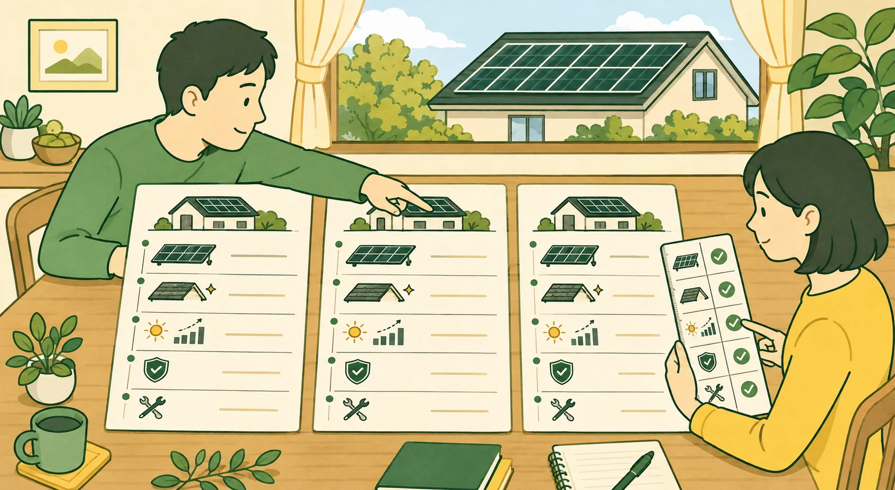

この記事で分かること
確定できない条件：概算だけでは決まらない住宅・工事条件が分かります．
比較する項目：複数社の見積書を同じ基準で比べられます．
契約前の確認：施工会社へ書面で確認する内容を整理できます．
「総額が安い会社を選べばよいのか」「何をそろえれば比較できるのか」「現地調査後の追加費用をどう確かめるのか」．金額だけを並べても，設備や工事範囲が違えば同じ見積もりとはいえません．
設備容量，機器，発電試算の前提，工事範囲，保証および補助金の扱いをそろえ，価格差と条件差を対応させます．最安値ではなく，現地調査後も説明と書面が一致するかで判断します．
同じ条件で見積もりを集める
見積もりサービスの利用は無料です．現地調査費は施工会社・条件で確認します．
広告・アフィリエイトを含みます．
先に採算の目安を確認する
見積もり前に，地域と電気料金から20年間の概算を確認できます．
概算では確定できない条件
見積もり比較サイトは候補を探す入口です．利用しただけで，施工品質，発電量，補助金の受給，系統接続または故障時の対応が一律に保証されるわけではありません．申込前に，個人情報の提供先，紹介される会社数，連絡方法，紹介や連絡を断る窓口，契約主体および無料となる範囲を，各サービスの公式説明と規約で確認します．
- 屋根面積，屋根材，形状，方角，傾斜および周囲の影．
- 実際に設置できるパネル枚数と設備容量．
- 足場，配線，分電盤および屋根補強等の個別施工費．
- 製品の型式，保証条件，出力保証および施工保証．
- 補助金の最終適用可否，申請時期および必要書類．
見積書をそろえて比較する
| 価格・内訳 | 税込総額，設備費，工事費，諸経費，補助金控除前後，支払時期． |
|---|---|
| 設備 | メーカー，型式，パネル容量，パワーコンディショナ容量，枚数． |
| 発電試算 | 日射量，方角，傾斜，影，劣化率，自家消費率，電気料金および売電単価． |
| 工事・追加費用 | 足場，架台，配線，屋根防水，分電盤を含む範囲と，現地調査後に追加費用が生じる条件． |
| 保証・対応 | 製品保証，出力保証，施工保証，雨漏り保証，故障時の連絡先． |
| 補助金申請 | 申請支援・代行の範囲，費用，必要書類，提出期限の管理者，不採択時の扱い． |
| 契約 | 工期，解約条件，補助金が不採択の場合の扱い，追加請求の条件． |
比較表の読み方
各社の見積書を縦に読むだけでなく，同じ項目を横に並べます．例えば，A社130万円に足場が含まれ，B社115万円に足場が含まれない場合，15万円の差をそのまま価格差とは判断できません．不足項目の追加後も同じ仕様になるかを確認します．

施工業者へ確認する
- 現地調査後に価格や容量が変わる条件を説明できるか．
- 配置図・配線図と，発電量・経済効果の計算条件を書面で確認できるか．
- 施工体制と責任主体，緊急時・故障時の窓口が明確か．
- 自宅と近い屋根材・建物条件の施工実績を示せるか．口コミは点数だけでなく，追加費用の説明，工期，施工後の不具合対応など，具体的な内容と投稿時期を確認する．
- 製品保証，出力保証，施工保証，雨漏り保証および工事完了に関する保証について，保証主体と対象外条件を説明しているか．
- 補助金申請，FIT認定および送配電事業者との系統接続手続について，担当者，費用，期限および不成立時の扱いが明確か．
同じ条件で複数社を比較する
会社ごとに設備容量や発電試算の前提が異なるままでは，総額の差が価格差なのか仕様差なのか判断できません．希望容量，蓄電池の有無，工事範囲および補助金の扱いをそろえて依頼し，差がある項目は理由を確認します．
依頼条件をそろえる例
「太陽光は4 kW前後，蓄電池なし，補助金控除前の税込価格，足場・標準電気工事を含む，追加工事は別記」と伝えます．発電試算には，地点，設備容量，屋根方角・傾斜，影，自家消費率，電気料金，売電単価および劣化率を記載してもらいます．同じ項目を提示できない会社には，省略理由を確認します．
複数社を比較すると，1社だけでは気づきにくい費目の不足，追加工事条件，保証範囲および発電試算の強い仮定を見つけやすくなります．最安値を自動的に選ぶのではなく，価格差と条件差を対応させるために比較します．
契約前の次の行動
- 現地調査後の確定見積書を受け取り，概算見積書との差分を書面で確認する．
- 追加工事が発生する条件，上限額および追加承認の方法を契約書へ反映する．
- 製品保証，出力保証，施工保証，雨漏り保証および工事完了に関する保証について，主体，期間，対象外条件および故障時の窓口を会社別に確認する．
- 配置図・配線図と発電試算の入力条件を保存し，契約容量，機器型式および施工方法が見積書・契約書で一致することを確認する．
- 補助金と系統接続の手続について，誰が，いつまでに，何を，いくらで行うかを書面で確認する．
注意点
契約を急かされた場合
「今日だけ安い」「残りわずか」などとして契約を急かされても，その場で契約せず，書面を持ち帰って比較します．訪問販売等ではクーリング・オフが可能な場合があります．不安があれば消費者ホットライン188へ相談できます．
まとめ
見積もりは，税込総額だけでなく，設備仕様，発電試算の前提，工事範囲，保証，申請支援および契約条件をそろえて比較します．
価格差と仕様差を分け，現地調査後の変更条件と追加費用を書面で確認してください．最安値を自動的に選ばず，説明の一貫性，責任主体および契約後の窓口も判断材料にします．
先に採算の目安を確認する
見積もり前に，地域と電気料金から20年間の概算を確認できます．
同じ条件で見積もりを集める
見積もりサービスの利用は無料です．現地調査費は施工会社・条件で確認します．
広告・アフィリエイトを含みます．
参考文献
- 国民生活センター「突然訪問されて太陽光発電設備と家庭用蓄電池を契約した」
- 国民生活センター「太陽光発電システムの点検商法が急増！」
- 太陽光発電協会「太陽光発電協会 販売規準」
- 太陽光発電協会「始めようソーラー生活」
公開データ版を確認しています．